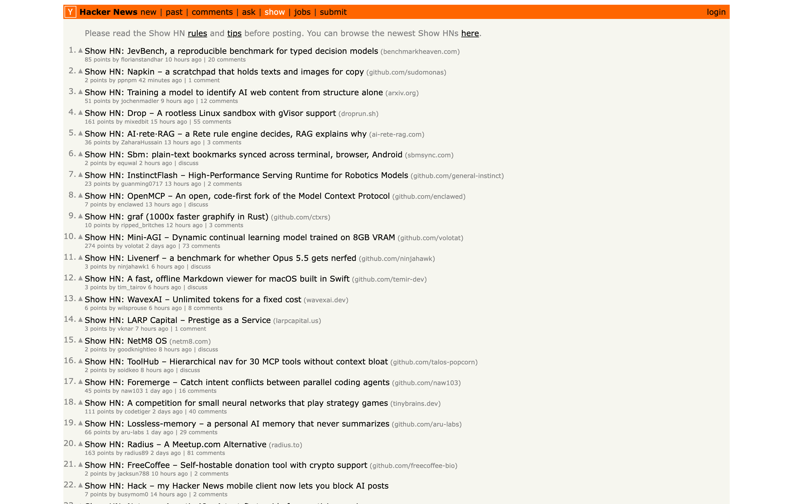

usermods
Your web. Your rules.
Vibe-code userscripts in place.
Every site is almost how you want it.
Say what's wrong.
usermods writes the fix.
■news.ycombinator.com/show

1Open the panel. Say what you want.
2It reads the real page first.
3It writes a mod and proposes it.
4Run once. The page changes.
5Save. It runs on every visit.
01
Any model. Your plan.
Claude, GPT, Grok, OpenRouter, Ollama. Or sign in with the ChatGPT or SuperGrok subscription you already pay for.
02
Edit any installed mod in chat.
Imported ones too. Update mod writes back over the same script, header and stored values intact.
03
Bring your Tampermonkey library.
One backup file brings every script across, with the GM_* API, @require and @resource they expect.
04
Chrome and Safari.
The same extension, the same mods.
ChromeMaciPhoneiPad


05
Open source. MIT.
Mods are plain .user.js files. Your key, your machine. No account, no hosted service.
usermods
Your web. Your rules.
Vibe-code userscripts in place.
>github.com/kballenegger/usermods
Open source · Coming to the Chrome Web Store